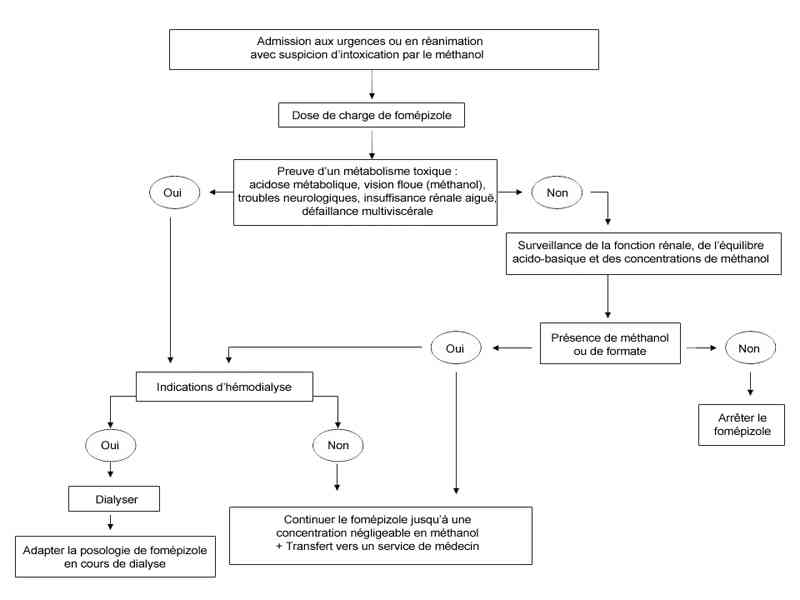

Bienvenue Sur Medical Education
Intoxication : méthanol
Spécialité : pediatrie / toxicologie /
Points importants
-
Intoxication rare mais potentiellement grave (dose létale: 1,2 mL/kg)
-
Présent dans de nombreux produits domestiques ou industriels : alcool à brûler (éthanol > 90%/méthanol < 10%), alcool de bois, alcool dénaturé, antigel, dissolvants, décapants, carburants
-
Toxicité liée aux métabolites résultant de l'action de l'alcool déshydrogénase hépatique
-
Responsable d'une acidose métabolique à trou anionique augmenté.
-
Antidote : inhibiteur (fomépizole) ou substrat (éthanol) compétitif de l'alcool déshydrogénase
-
Hémodialyse : indication à discuter avec une équipe spécialisée de réanimation
Présentation clinique / CIMU
SIGNES FONCTIONNELS
-
Initialement asymptomatique, ébriété faible, somnolence (trouble de conscience plus marqué si éthanol associé)
-
Délai des signes : 12-24h après ingestion
-
Signes respiratoires : dyspnée de Kussmal
-
Signes digestifs (modérés) :
-
nausées, vomissements
-
douleurs abdominales
-
Signes oculaires :
-
vision trouble
-
baisse de l'acuité visuelle
-
anomalie de la vision des couleurs
-
photophobie
-
scintillations
-
amaurose
-
cécité
-
Signes neurologiques :
-
céphalées
-
vertiges
-
convulsions
-
coma
-
Défaillance multiviscérale si intoxication massive vue tardivement
CONTEXTE
Présentation clinique / CIMU
SIGNES FONCTIONNELS
- Initialement asymptomatique, ébriété faible, somnolence (trouble de conscience plus marqué si éthanol associé)
- Délai des signes : 12-24h après ingestion
- Signes respiratoires : dyspnée de Kussmal
-
Signes digestifs (modérés) :
- nausées, vomissements
- douleurs abdominales
-
Signes oculaires :
- vision trouble
- baisse de l'acuité visuelle
- anomalie de la vision des couleurs
- photophobie
- scintillations
- amaurose
- cécité
-
Signes neurologiques :
- céphalées
- vertiges
- convulsions
- coma
- Défaillance multiviscérale si intoxication massive vue tardivement
CONTEXTE
Terrain
- Sujet alcoolique chronique (consommation comme substitut de l'éthanol)
- Sujet dépressif (tentative de suicide)
- Intoxication collective (« alcool frelaté »)
Antécédents
- Dépression
- Alcoolisme chronique
Circonstances de survenue
- Tentative de suicide par ingestion
- Consommation comme substitut de boisson par un sujet éthylique chronique
- Intoxication collective à partir d'un alcool frelaté
EXAMEN CLINIQUE
Neurologique
- Mydriase
- Somnolence
- Troubles de la conscience allant jusqu'au coma (apprécié par le score de Glasgow), sans signe de localisation en général
- Convulsions
Cardiovasculaire
- Tachycardie
- Hémodynamique généralement conservée sauf cas vu tardivement avec défaillance multiviscérale
Pulmonaire
- Dyspnée de Kussmaul (par acidose métabolique)
- Polypnée (par inhalation, plus rare) ; mesurer FR
Oculaire
- Mydriase
- Flou visuel, baisse de l'acuité visuelle, atteinte de la vision des couleurs, cécité
N.B. : Les modes de découverte de l'intoxiqué sont donc multiples
- Absence de symptômes (le plus fréquemment)
- Hyperventilation réflexe due à l'acidose métabolique
- Troubles de la conscience
- Atteinte ophtalmologique
- Voire défaillance multiviscérale
FACTEURS PRONOSTIQUES
- Dose ingérée, délai de prise en charge > 10h
- Acidose métabolique profonde (HCO3- < 10 mmol/L) avec trou anionique important
- Présence de signes oculaires ou neurologiques
- Mydriase aréactive
EXAMENS PARACLINIQUES SIMPLES
- Hypoglycémie : possible si consommation associée d'éthanol
- Bandelette urinaire : absence de corps cétoniques
CIMU
- Tri 1 à 3 en fonction de l'atteinte des fonctions vitales
Signes paracliniques
BIOLOGIQUE
-
Gaz du sang artériel : acidose métabolique
-
Ionogramme sanguin :
-
bicarbonates abaissés
-
trou anionique augmenté
-
hypomagnésémie ou hypokaliémie possibles
-
créatininémie élevée si vu tardivement
-
Lactates : normaux ou légèrement élevés sans expliquer le trou anionique
-
Mesure de l'osmolarité par la méthode du delta cryoscopique: La différence entre l'osmolarité mesurée et l'osmolarité calculée est le témoin de la présence d'un toxique (ici le méthanol) de faible poids moléculaire et à forte concentration molaire
-
NFS : élévation du VGM en rapport avec l'alcoolisme chronique ; autres anomalies dont thrombopénie si vu tardivement avec défaillance multiviscérale
-
Bilan hépatique : stigmates éventuels d'une hépatopathie éthylique antérieure (élévation des gamma-GT)
-
Lipasémie : pancréatite aiguë ou décompensation d'une pancréatite alcoolique chronique sous-jacente
-
Hypoglycémie : possible si consommation associée d'éthanol
-
Acidose métabolique avec trou anionique élevé (Na+ + K+) - (Cl- + HCO3-) > 16 meq/L, non expliquée par une élévation des lactates :
-
le trou anionique est expliqué par les formates
-
l'absence de trou anionique ne doit jamais laisser sous-estimer la gravité potentielle d'une intoxication vue précocement
-
Trou osmolaire : osmolarité mesurée - osmolarité calculée (= 1,86 [Na+] + [urémie] + [glycémie]) / 0,93, en mmol/L, N: 10-15 mosmol/kg) :
-
un trou osmolaire de 34 mosmol/kg correspond à une concentration de méthanol à 1 g/L
-
il est nul à la phase tardive alors même que l'acidose est la plus profonde
IMAGERIE
- bicarbonates abaissés
- trou anionique augmenté
- hypomagnésémie ou hypokaliémie possibles
- créatininémie élevée si vu tardivement
- le trou anionique est expliqué par les formates
- l'absence de trou anionique ne doit jamais laisser sous-estimer la gravité potentielle d'une intoxication vue précocement
- un trou osmolaire de 34 mosmol/kg correspond à une concentration de méthanol à 1 g/L
- il est nul à la phase tardive alors même que l'acidose est la plus profonde
Radiographie pulmonaire
- Normale malgré la polypnée
Fond d'oeil
- Flou ou oedème papillaire, rétinite, névrite optique rétrobulbaire
TDM ou IRM cérébrale
- A faire si signes neurologiques
- Œdème cérébral, hémorragie ou ischémie des noyaux gris centraux
Examens électrophysiologiques
- A faire si signes oculaires et selon disponibilité dans l'hôpital
- Potentiels évoqués visuels
- Electrorétinogramme
Diagnostic étiologique
-
Dosage plasmatique du méthanol (seuil de toxicité > 0,2 g/L, critère de gravité si > 0,5 g/L) :
-
la méthanolémie n'est pas corrélée à l'importance de l'atteinte visuelle
-
Dosage plasmatique de l'éthanol
-
Dosage des formates plasmatiques (si disponible) : C'est l'acide formique qui est responsable du trou anionique et des lésions ophtalmiques
-
Dosage plasmatique de l'éthylène glycol : négatif
-
Dosage plasmatique des salicylés : négatif
Diagnostic différentiel
-
Autres causes de polypnée ou d'insuffisance respiratoire aiguë
-
Autres causes d'acidose métabolique avec augmentation du trou osmolaire (> 25 mosmol/kg) et/ou du trou anionique (> 17 mEq/L) :
-
éthanol : trou osmolaire augmenté - trou anionique normal
-
éthylène glycol : trou osmolaire augmenté - trou anionique augmenté
-
méthanol : trou osmolaire augmenté - trou anionique augmenté
-
isopropanol : trou osmolaire augmenté - trou anionique normal
-
autres alcools toxiques : trou osmolaire augmenté - trou anionique rarement augmenté
-
acide acétylsalicylique : trou osmolaire normal - trou anionique faiblement augmenté
-
acidose lactique : trou osmolaire normal - trou anionique augmenté
-
acidocétose : trou osmolaire faiblement augmenté - trou anionique augmenté
-
insuffisance rénale aiguë : trou osmolaire normal - trou anionique faiblement augmenté
Traitement
TRAITEMENT PREHOSPITALIER / INTRAHOSPITALIER
- la méthanolémie n'est pas corrélée à l'importance de l'atteinte visuelle
Diagnostic différentiel
- Autres causes de polypnée ou d'insuffisance respiratoire aiguë
-
Autres causes d'acidose métabolique avec augmentation du trou osmolaire (> 25 mosmol/kg) et/ou du trou anionique (> 17 mEq/L) :
- éthanol : trou osmolaire augmenté - trou anionique normal
- éthylène glycol : trou osmolaire augmenté - trou anionique augmenté
- méthanol : trou osmolaire augmenté - trou anionique augmenté
- isopropanol : trou osmolaire augmenté - trou anionique normal
- autres alcools toxiques : trou osmolaire augmenté - trou anionique rarement augmenté
- acide acétylsalicylique : trou osmolaire normal - trou anionique faiblement augmenté
- acidose lactique : trou osmolaire normal - trou anionique augmenté
- acidocétose : trou osmolaire faiblement augmenté - trou anionique augmenté
- insuffisance rénale aiguë : trou osmolaire normal - trou anionique faiblement augmenté
Traitement
TRAITEMENT PREHOSPITALIER / INTRAHOSPITALIER
Stabilisation initiale
- Voie veineuse de bon calibre
- Bicarbonates de sodium 1,4% (environ 1-2 mEq/kg) si acidose importante
- Remplissage vasculaire si collapsus
- Intubation et ventilation mécanique si coma avec Glasgow < 8
- Clonazépam 1 mg IV si convulsion
Suivi du traitement
-
Décontamination digestive si vu dans l'heure, en l'absence de contre-indications :
- lavage gastrique
- charbon activé inefficace
- Alcalinisation si pH < 7,20 avec bicarbonates de sodium 1,4% avec surveillance par BU si besoin
- 4-méthylpyrazole (Fomépizole®) : antidote de première ligne ; 15 mg/kg en 30 min (dose de charge) puis 10 mg/kg /12h tant que méthanolémie > 0,2 g/L
- Ethanol (Curéthyl®) : alternative si fomépizole non disponible; 0,6 g/kg (dose de charge) en 30 min sur cathéter central puis 0,1 g/kg/h en IV à la seringue électrique avec maintien d'une éthanolémie >1 g/L tant que la méthanolémie > 0,2 g/L
- Acide folinique (Lederfoline®) : 50 mg/ 4h pendant 24 h - pourrait limiter les lésions rétiniennes mais intérêt non démontré chez l'homme
- Hémodialyse : indications à discuter si acidose profonde (pH artériel < 7,10 ou HCO3- < 5 mmol/L), troubles visuels, insuffisance rénale, concentration de méthanol > 0,5 g/L (ce dernier critère n'est pas retenu par tous les auteurs)
MEDICAMENTS
Fomépizole® (4-méthylpyrazole)
- Antidote de 1e ligne
- Inhibiteur compétitif de l'alcool déshydrogénase, dépourvu des effets secondaires de l'éthanol
- Il possède une très bonne affinité (plus élevée que l'éthanol) pour l'alcool déshydrogénase et entraîne un blocage efficace de cette enzyme, comme en témoigne l'allongement de la demi-vie d'élimination plasmatique du méthanol (qui augmente jusqu'à environ 50 heures)
- La dose de charge est de 15 mg/kg suivie d'une dose d'entretien de 10 mg/kg toutes les 12 heures (ou avec une posologie décroissante)
- Le traitement est poursuivi jusqu'à ce que la méthanolémie devienne indétectable dans le plasma
- Les effets secondaires sont rares et peu graves : nausées, vertiges, céphalées, réactions allergiques et élévation des polynucléaires éosinophiles, douleur au site d'injection et élévation transitoire des transaminases
- Les contre-indications sont l'allergie connue aux pyrazolés et la grossesse (relative)
- En cas d'hémodialyse, la posologie d'entretien du fomépizole doit être augmentée à 1 mg/kg par heure pour compenser les pertes dans le dialysat
- En raison de la gravité potentielle et du risque de séquelles visuelles de l'intoxication au méthanol, le fomépizole doit être administré le plus précocement possible, dès la suspicion d'intoxication (anamnèse compatible ou acidose métabolique à trou anionique augmenté) avant la confirmation analytique. L'absence d'effets secondaires importants et la facilité de son administration chez les patients intoxiqués (voie orale possible et absence de monitorage des concentrations plasmatiques de fomépizole) en font un antidote idéal des intoxications collectives
Ethanol
- Antidote de 2e ligne, en l'absence ou si contre-indication du fomépizole
- L'oxydation du méthanol peut être bloquée par l'éthanol qui est un substrat compétitif de l'alcool déshydrogénase
- Le schéma d'administration per os ou IV de l'éthanol est le suivant : 0,6 g/kg en dose de charge suivi d'une dose d'entretien de 50 - 150 mg/kg/h
- La posologie devra être adaptée aux mesures régulières de la concentration plasmatique d'éthanol qui doit se situer aux environs de 1 g/L afin de garantir un blocage efficace de l'ADH
- La surveillance de ce traitement est de ce fait délicate en raison des effets secondaires neurologiques (ébriété et troubles de la conscience) et métaboliques (hypoglycémie) de l'éthanol et de la variabilité interindividuelle des posologies nécessaires (doses plus élevées chez les alcooliques chroniques)
Surveillance
CLINIQUE
-
Conscience (score de Glasgow), PA, FC, FR/4h
-
Acuité visuelle et vision des couleurs
PARACLINIQUE
-
Ionogramme sanguin, créatininémie et mesure du trou anionique
-
Gazométrie : pH artériel et bicarbonates
-
Dosage plasmatique du méthanol (cinétique)
-
Examen ophtalmologique (si anomalies fonctionnelles)
Devenir / orientation
-
A adresser systématiquement aux urgences d'un hôpital pour évaluation de la toxicité (dosage plasmatique de méthanol)
-
Ne pas se fier à l'examen clinique qui est initialement normal, même en présence d'une intoxication fatale
-
L'ingestion accidentelle d'une ou 2 gorgées d'alcool à brûler fabriqué en France ne donne pas d'intoxication en raison de sa composition : < 10% méthanol + > 90% éthanol. Se méfier par contre des marques non commercialisées en France
CRITERES D'ADMISSION
Devenir / orientation
- A adresser systématiquement aux urgences d'un hôpital pour évaluation de la toxicité (dosage plasmatique de méthanol)
- Ne pas se fier à l'examen clinique qui est initialement normal, même en présence d'une intoxication fatale
- L'ingestion accidentelle d'une ou 2 gorgées d'alcool à brûler fabriqué en France ne donne pas d'intoxication en raison de sa composition : < 10% méthanol + > 90% éthanol. Se méfier par contre des marques non commercialisées en France
CRITERES D'ADMISSION
En réanimation
- Si acidose métabolique
- Si atteinte des fonctions vitales : coma, convulsions, oedème cérébral, état de choc, insuffisance rénale aiguë
- Si dose supposée ingérée ou concentration plasmatique en méthanol élevée
CRITERES DE SORTIE DE L'HOPITAL
- Disparition de tout trouble métabolique et de tout trouble de la conscience
- Normalisation des gaz du sang
- Après avis psychiatrique en cas d'intoxication volontaire
Mécanisme / description
Généralités
- Le méthanol est un alcool organique utilisé comme solvant (préparation de dégraissage), carburant (alcool à brûler) ou matière première (antigel) dans de nombreuses industries
- Les intoxications aiguës peuvent se voir dans les suites d'ingestions à but suicidaire ou accidentelle ou à la suite de son utilisation abusive dans la fabrication d'alcool frelaté
- L'intoxication par voie transcutanée (applications à but thérapeutique d'enveloppements alcooliques chez l'enfant) ou par inhalation (accidents de travail en laboratoire de recherche ou en industrie spécialisée) est exceptionnelle
Toxicocinétique
- La dose létale est de l'ordre de 1,2 mL/kg
- L'absorption digestive est rapide avec une biodisponibilité de 100%
- Le volume de distribution est de 0,7 L/kg
- Le métabolisme est hépatique, menant à la production de formaldéhyde et d'acide formique
- La clairance plasmatique est de l'ordre de 10 mL/min et la clairance rénale de l'ordre de 1 mL/min
- La cinétique d'élimination spontanée du méthanol est d'ordre 0 (vitesse d'élimination constante et indépendante de la concentration) mais devient d'ordre 1 (variation de l'élimination selon la concentration) en présence d'un antidote inhibiteur de l'alcool déshydrogénase
Mécanisme de toxicité
- Le méthanol est métabolisé dans le foie par l'alcool déshydrogénase en formaldéhyde puis, par l'aldéhyde déshydrogénase, en acide formique. Ce sont ces métabolites qui sont responsables de la toxicité aiguë du méthanol
-
_848
Métabolites du méthanol
- L'atteinte ophtalmologique est secondaire aux lésions cellulaires neurosensorielles et rétiniennes provoquées par les formates. Ceux-ci inhiberaient la cytochrome C oxydase et la synthèse d'ATP, entraînant une altération de l'activité de l'ATPase-Na/K dépendante et une perturbation de la conduction électrique avec stase axoplasmique et oedème intra-axonal
- Il existe également une atteinte spécifique des noyaux gris centraux responsable d'hémorragies bilatérales des putamens et de syndromes parkinsoniens séquellaires
- Le traitement antidotique vise donc à inhiber le plus rapidement possible le métabolisme du méthanol en ses dérives toxiques
Algorithme
- Algorithme de l'intoxication au méthanol
 _781 Algorithme Algorithme : intoxication au méthanol
Bibliographie
- Mégarbane B, Borron SW, Baud FJ. Current recommendations for treatment of severe toxic alcohol poisonings. Intensive Care Med 2005; 31:189-95
- Mégarbane B, Borron SW, Trout H, Hantson P, Jaeger A, Krencker E, Bismuth C, Baud FJ. Treatment of acute methanol poisoning with fomepizole. Intensive Care Med 2001; 27:1370-8
- Brent J. Fomepizole for ethylene glycol and methanol poisoning. N Engl J Med 2009; 360: 2216-2223
- Brent J, McMartin K, Phillips S, Aaron C, Kulig K; Methylpyrazole for Toxic Alcohols Study Group. Fomepizole for the treatment of methanol poisoning. N Engl J Med 2001; 344:424-9
-
Barceloux DG, Bond GR, Krenzelok EP, Cooper H, Vale JA; American Academy of Clinical Toxicology Ad Hoc Committee on the Treatment Guidelines for Methanol Poisoning. American Academy of Clinical Toxicology practice guidelines on the treatment of methanol poisoning. J Toxicol Clin Toxicol 2002; 40:415-46
Auteur(s) : Bruno MEGARBANE